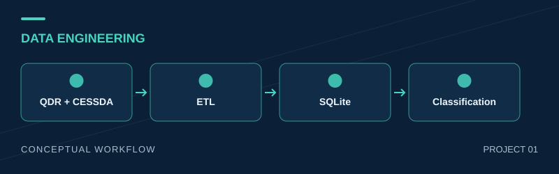
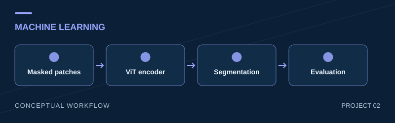
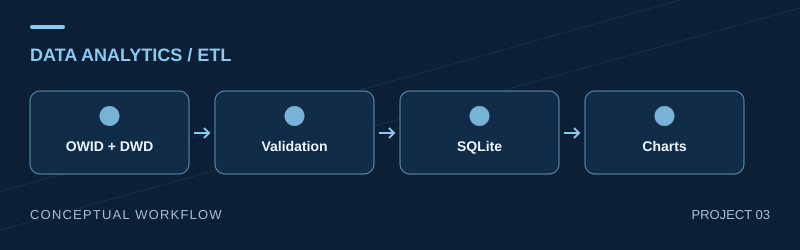
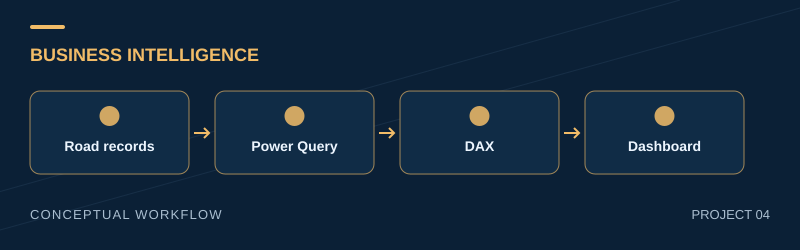
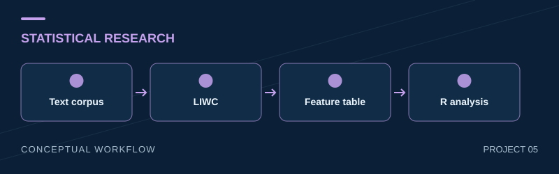
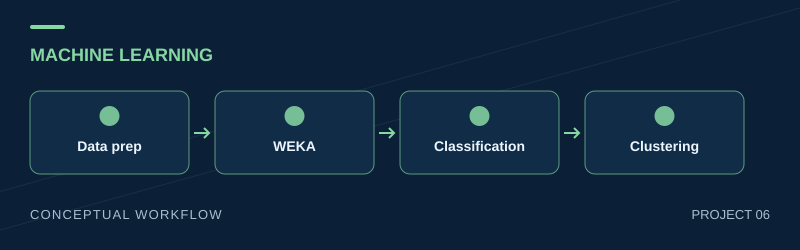

Analytics & BI
Power BI, DAX, Power Query, Excel, KPI reporting, data visualization
Erlangen, Germany · Available immediately
Banking analytics experience and an MSc in Data Science in progress at FAU. I turn operational data into clear reports, actionable analysis and reliable data workflows.
01 / About
I am completing my M.Sc. in Data Science at Friedrich-Alexander-Universität Erlangen-Nürnberg (FAU). My coursework is complete and my master's thesis remains, with expected graduation in March 2028.
Previously, I worked in Alternative Delivery Services at IFIC Bank, analyzing ATM profitability, POS terminal performance and debit-card activity. I bring this operational perspective to SQL analysis, data quality, reporting, dashboards and data engineering projects.
I am available immediately for junior full-time positions, full-time internships, working-student roles and research assistant opportunities, subject to applicable work authorization. I am based in Erlangen and willing to relocate anywhere in Germany.
02 / Skills
Power BI, DAX, Power Query, Excel, KPI reporting, data visualization
Python, SQL, SQLite, Pandas, NumPy, Jupyter, Git and GitHub
ETL, data cleaning, data validation, relational modeling, API acquisition
PyTorch, scikit-learn, WEKA, R, text mining, exploratory analysis
03 / Selected work
From data pipelines and business dashboards to machine learning and statistical research. The illustrations show conceptual workflows, not live dashboards or model predictions.

Research metadata acquisition, relational storage and classification from QDR and CESSDA.
62 projects · 4,087 file records
Documented submission snapshot: 10 acquisition validation checks passed; file records are not successful downloads.
View repository
Masked autoencoder pretraining and Vision Transformer fine-tuning for semantic segmentation with limited labels.
75% masking · 10% study label budget
Historical report: 28.50% ADE20K and 18.20% Cityscapes mIoU. Current reference code has not reproduced these results.
View repository
Python and SQLite pipeline for environmental time series, schema checks, source provenance and descriptive charts.
OWID emissions · DWD station pressure
Historical emissions and Jan Mayen station pressure differ in geographic scope. Descriptive analysis only; no causal claim.
View repository
Power BI dashboard exploring road accident and casualty patterns with KPI cards, filters and geographic visuals.
307,973 UK accident records
Workbook snapshot, 2021–2022. Date/weekday and severity-label issues require review; rendered KPIs not independently verified.
View repository
Historical exploratory analysis of linguistic features from social-media text, using LIWC and R subset selection.
Exploratory linguistic analysis
Retrospective research, not a clinically validated risk assessment or diagnostic tool.
View repository
WEKA coursework comparing classification and clustering approaches, with separate synthetic Python demonstrations.
Supervised + unsupervised learning
Historical coursework and new synthetic examples are separate; historical results have not been independently reproduced.
View repository04 / Experience
IFIC Bank PLC
American International University-Bangladesh (AIUB)
05 / Education
Oct 2022 – expected Mar 2028
Friedrich-Alexander-Universität Erlangen-Nürnberg (FAU)
Coursework completed; master's thesis remaining.
Mar 2016 – Oct 2021
American International University-Bangladesh (AIUB)
Continuous learning
English C1 · German A2
SQL for Data Science · Python Basics · Managing Machine Learning Projects with Google Cloud (Coursera)
06 / Contact
Open to Data Analyst, BI Analyst, Reporting Analyst, data engineering and research opportunities across Germany. Available immediately for full-time jobs and internships, Werkstudent and HiWi roles, subject to applicable work authorization.